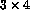

Array constructors are
used to give arrays or sections of arrays specific values.
An array constructor is a comma separated list of scalar expressions
delimited by (/ and /). The results of the expressions
are placed into the
array in array element order with any type conversions being performed in
the same manner as for
regular assignment. The constructor must be of the correct length for
the array, in other words, the section and the constructor must conform.
For example,
IMPLICIT NONE
INTEGER, DIMENSION(1:10) :: ints
CHARACTER(len=5), DIMENSION(1:3) :: colours
REAL, DIMENSION(1:4) :: heights
heights = (/5.10, 5.6, 4.0, 3.6/)
colours = (/'RED ','GREEN','BLUE '/)
! note padding so strings are 5 chars
ints = (/ 100, (i, i=1,8), 100 /)
...
END
The array and its constructor must conform.
Notice that all strings in the constructor for colours are 5 characters long. This is because the string within the constructor must be the correct length for the variable.
(i, i=1,8) is an
implied-DO specifier and may be used in constructors to specify a
sequence of constructor values. There may be any number of separate
implied DO s which may be mixed with other specification methods.
In the above example the vector ints will contain the values
(/ 100, 1, 2, 3, 4, 5, 6, 7, 8, 100 /). Note the format of the
implied DO: a DO-loop index specification surrounded by parentheses.
There is a restriction that only one dimensional constructors are permitted, for higher rank arrays the RESHAPE intrinsic must be used to modify the shape of the result of the RHS so that it conforms to the LHS:
INTEGER, DIMENSION(1:3,1:4) :: board
board = RESHAPE((/11,21,31,12,22,32,13,23,33,14,24,34/), (/3,4/))
The values are specified as a one dimensional constructor and then the shape is modified to be a  array which conforms with the declared shape of board.
Now try this question